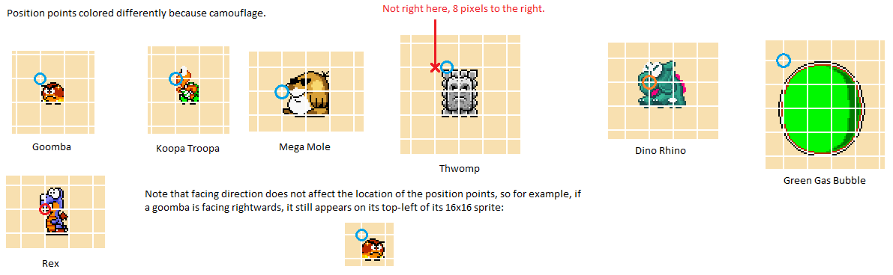
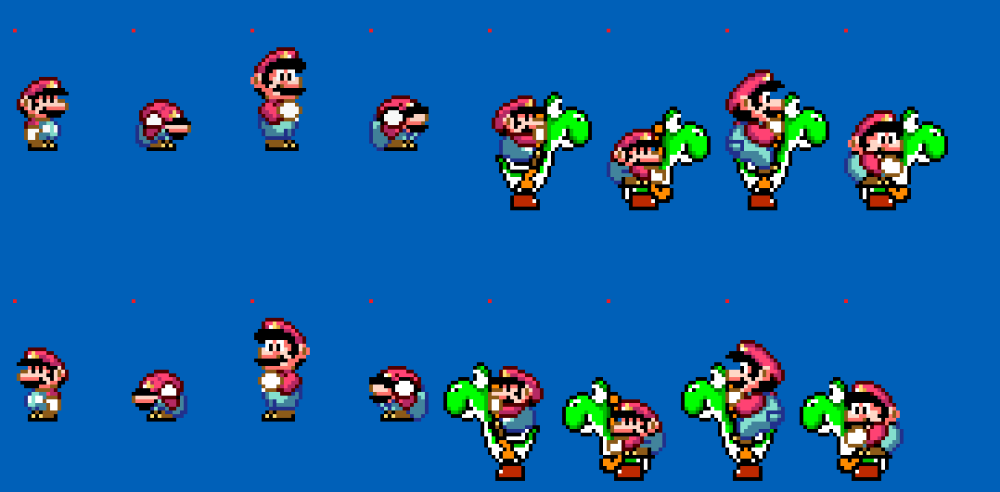

All the resources here to draw HUD elements on sprites needs a displacement from their sprite “origin”-- the position obtained after calling GetDrawInfo written to $00 and $01.
Sprites have their “origin” X-position generally at the left edge of their body, for vertical position of the said origin, it is usually 16 pixels from the bottom (the “feet”) for object-interacting sprites and the top-left of the minimum
bounding box for most non-object-interacting sprites:

Not all custom sprites are like this due to it being coded by different people. An easy way to find its origin is to simply use $00 and $01 (after calling GetDrawInfo) and write to $02 and $03, like this:
LDA $00 STA $02 LDA $01 STA $03 |
Now in the above example shown, the sprite is 16px wide, finding the midpoint on the horizontal axis is very easy: divide the width by 2 and you get 8. So to obtain the offset from the origin, just take $00, add by $08, write to $03, then call GetStringXPositionCentered.
However, when dealing with repeating icons, it is a whole another story. That routine can accept any displacement amount besides 8 pixels. In the test sprite StatusBarTutorial/Pixi_CustomSprite/TestSprite_RepeatedIcons.asm, the horizontal offset for the center point from the origin is +4:
LDA $00 ;\X position, the body of the sprite is 16x16, and each icon is 8x8. CLC ;| ADC #$04 ;| STA $02 ;/ |
The player character (Mario or Luigi)'s position, like most sprites, is on the top-left corner. His bounding box, however, contrary to his visual appearance, is 16x32 pixels, regardless if he is crouching, being small, or have super/cape/fire powerup, and any combination of it.
If he is on yoshi, then his Y position is offset by 16 ($0010) pixels up. As presented below, the red dots represents the player's position (RAM address X_Position: $94-$95, Y_Position: $96-$97 for level coordinates, X_Position: $7E-$7F,
Y_Position: $80-$81 for position relative to the screen border):
